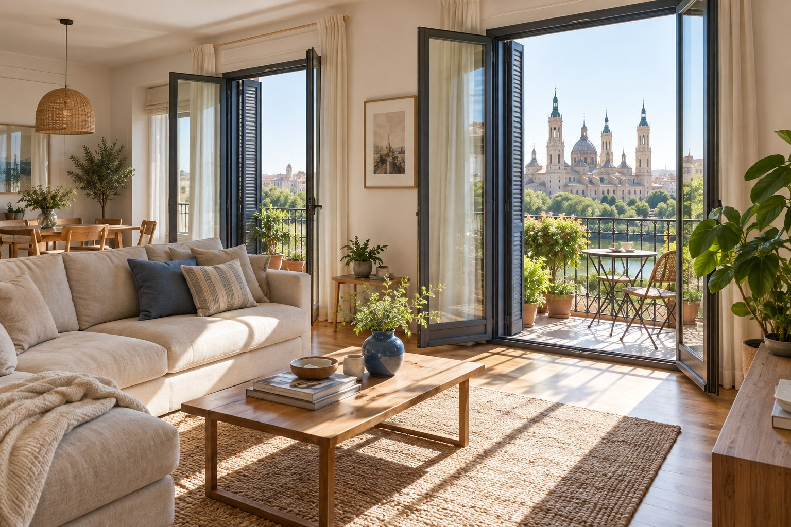
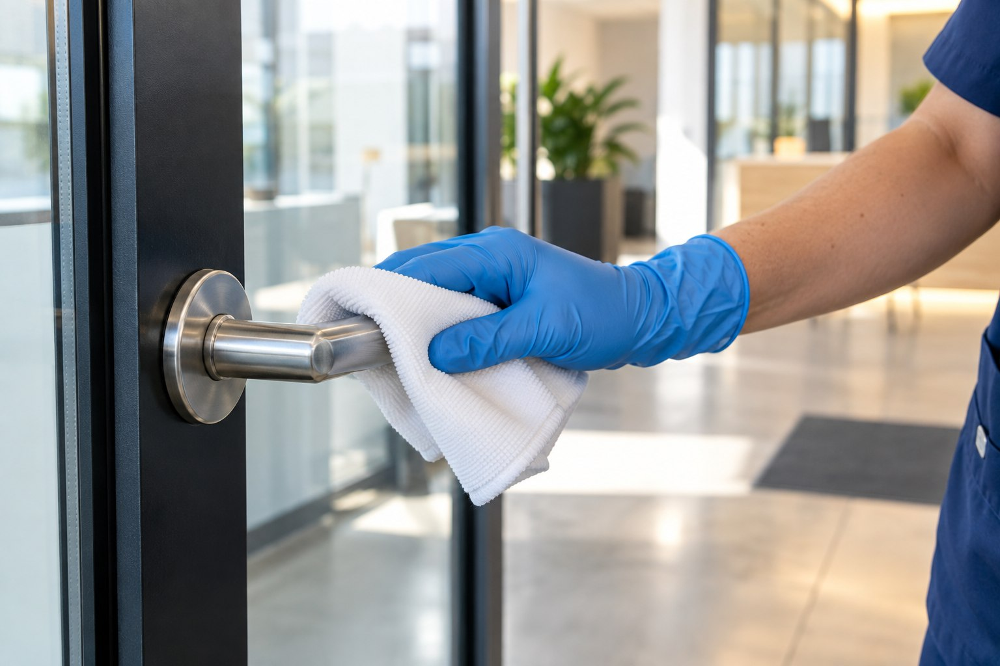
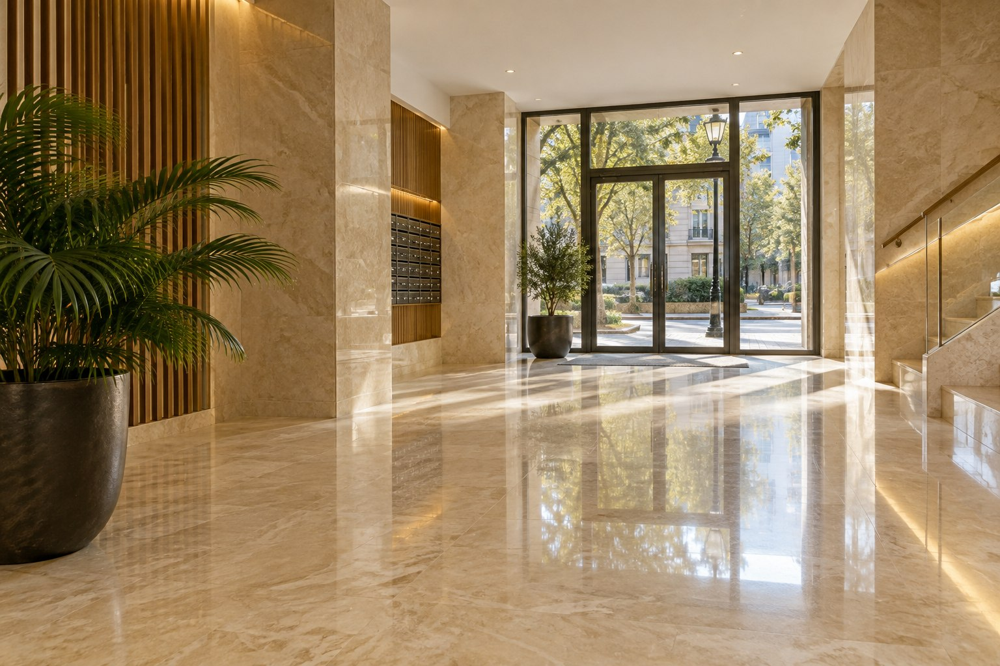
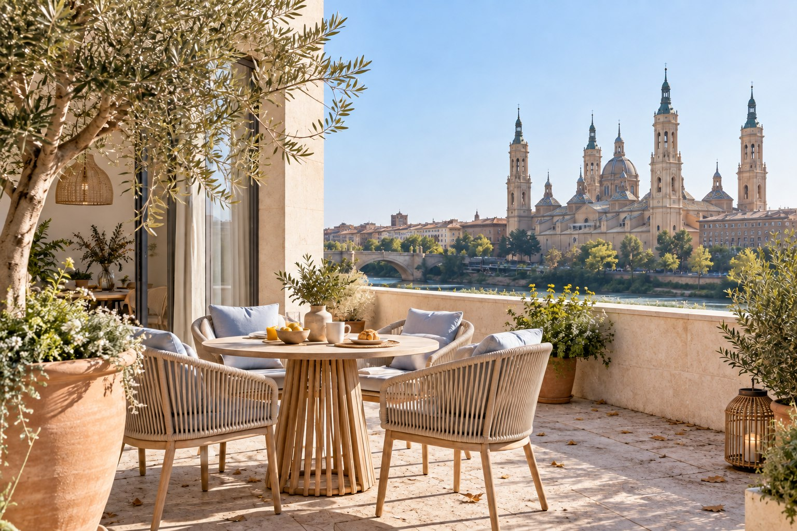

Cuéntanos.
Escríbenos por WhatsApp y dinos qué espacio necesitas limpiar y dónde está.
Para tu casa, tu negocio y ese rincón
que quieres volver a disfrutar.
Deja tus espacios relucientes.



Abrir las ventanas. Recibir a alguien.
Entrar en casa y pensar: «qué gusto».
 El cuidado empieza en los detalles.
El cuidado empieza en los detalles.Para el lugar donde vives.
Para el lugar donde trabajas.
Para esos rincones que merecen atención.

Qué gusto estar en casa.

Que entre toda la luz.
Un buen lugar para trabajar.
Fotografías creadas para esta demostración · Ejemplos visuales ilustrativos.
01Que entre toda la luz.
 02
02Vuelve a mirar hacia fuera.
 03
03Cuidado desde la entrada.
04Tu rincón al aire libre.
05Qué gusto estar en casa.
06Una nueva sensación de orden.
 07
07Cuidar el conjunto importa.

08Hablemos de lo que necesitas.
09Un buen lugar para trabajar.
 10
10Espacios que invitan a moverse.
 11
11Lo compartido también es tuyo.
 12
12Atención a cada espacio.
 13
13Otra mirada a tus suelos.

14La luz también está bajo tus pies.
 15
15Cuéntanos cómo es tu tejido.
 16
16Tu sitio favorito merece cuidado.
Fotografías creadas para esta demostración · Ejemplos visuales ilustrativos.
Elige lo que necesitas y prepara tu consulta. La conversación continúa contigo en WhatsApp.
No todos los espacios necesitan lo mismo. Por eso la conversación empieza con lo que te importa a ti: qué quieres limpiar, cómo es el lugar y qué zonas requieren más atención.
Cuéntanos tu ideaEscríbenos por WhatsApp y dinos qué espacio necesitas limpiar y dónde está.
Unas fotos y las medidas aproximadas ayudan a entender lo que tienes en mente.
Consulta el alcance del servicio y pide tu presupuesto sin compromiso.
Desliza y descubre una escena ilustrativa antes y después de la limpieza.
Estas imágenes están creadas para la demostración. No corresponden a trabajos realizados por Lumis ni garantizan un resultado.
Descubre la limpieza de terrazas

Desliza, toca o utiliza las flechas del teclado.
Visita nuestro perfil oficial de Instagram.
Fotografías creadas para esta demostración · Ejemplos visuales ilustrativos.